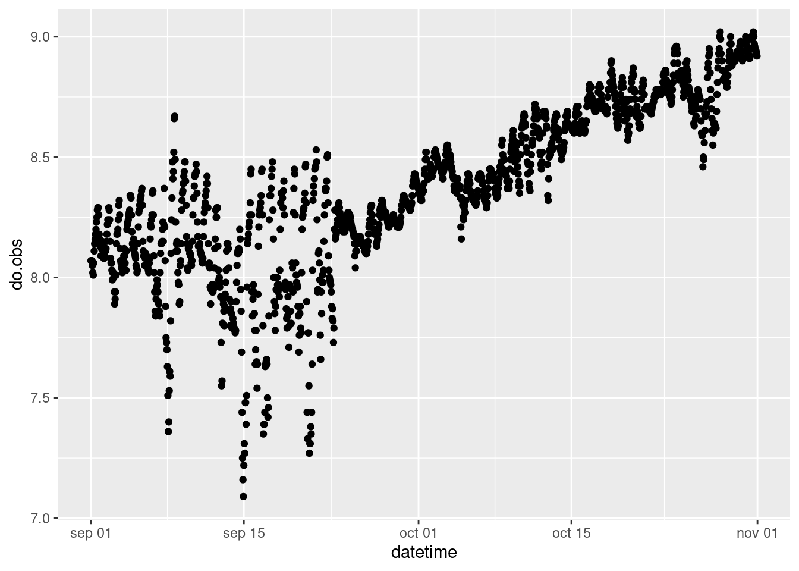

7 Representación gráfica
Después de algunas peleas con los datos y, porqué no ser sinceros, con el maldito-bendito R, ya tenemos suficiente información sobre el lago Trout. El siguiente paso es representar gráficamente esta información para poder interpretar mejor los resultados y comunicarlos de forma efectiva al resto de compañerxs. El paquete estrella de R para esta tarea, ya lo conocéis, es ggplot2.
Antes de empezar vamos a cargar todos los datos que necesitaremos.
#Datos iniciales
datos.ts <- read.csv("./Datos/datos_ts_2005_zmix.csv")
datos.ts$datetime <- as.POSIXct(datos.ts$datetime)
#Datos temperatura
Perfiles_temp <- read.csv("./Datos/Perfiles_temp.csv")
Perfiles_temp$sampledate <- as.Date(Perfiles_temp$sampledate)
Perfiles_temp$datetime<- as.POSIXct(Perfiles_temp$datetime)
#Datos metabolismo
datos_metab <- read.csv("./Datos/Metabolismo_Trout.csv")7.1 Variables físico-químicas
Lo primero que vamos a hacer es generar algunas sencillas gráficas para ver el estado del lago durante el periodo que hemos seleccionado.
library(ggplot2)
ggplot(datos.ts, aes(x=datetime, y=do.obs))+
geom_point()
Podemos repetir esta gráfica para cada una de las variables que tenemos o podemos servirnos del paquete reshape2 y convertir la tabla de datos a forma “largo” y usar una capa para que haga una gráfica por cada variable.
library(reshape2)
#Convertimos la tabla a formato largo
datos.ts_l <- melt(datos.ts, id.vars = c("datetime") , varnames = c('variable'), value.name = 'valor')
#Representamos
ggplot(datos.ts_l, aes(x = datetime, y = valor))+
geom_point()+
facet_wrap(~variable, scales = "free_y", ncol = 2)También podríamos, por ejemplo, querer hacer un “zoom” a solo unos días para ver si existen tendencencias diarias.
library(lubridate)##
## Attaching package: 'lubridate'## The following objects are masked from 'package:base':
##
## date, intersect, setdiff, union ggplot(subset(datos.ts_l, date(datetime) >= "2005-09-05" & date(datetime) <= "2005-09-07"), aes(x = datetime, y = valor))+
geom_point()+
facet_wrap(~variable, scales = "free_y", ncol = 2)+
scale_x_datetime(date_labels = "%R")Vamos a modificar un poco el aspecto de las gráficas anteriores antes de pasar las siguientes:
#Podemos usar un "theme" prediseñado
Grafica_vars <- ggplot(datos.ts_l, aes(x = datetime, y = valor))+
geom_point()+
facet_wrap(~variable, scales = "free_y", ncol = 2)
Grafica_vars + theme_classic(base_size = 12, base_family = "Times") Grafica_vars + labs(x = NULL, y = NULL)#Y luego cambiar algunos aspecto del "theme" de la gráfica usando: %+replace% theme(axis.title = element_blank(), strip.background = element_blank())
Grafica_vars + theme_classic(base_size = 12, base_family = "Times")%+replace% theme(axis.title = element_blank(), strip.background = element_blank())#También podemos modificar el "theme" directamente a nuestro gusto
Grafica_vars + theme(axis.title = element_blank(), panel.grid = element_blank(), plot.background = element_rect(fill = "black"))Una vez que tenemos el aspecto que deseamos de nuestra gráfica, la guardamos y la exportamos, a la carpeta que creamos llamada “Graficas”, para poder usarla en cualquier documento en el que estemos trabajando.
#Guardamos
Grafica_vars_exp <- Grafica_vars + theme_classic(base_size = 12, base_family = "Times") + labs(x = NULL, y = NULL)
#Exportamos
ggsave("./Graficas/Grafica_variables.png", Grafica_vars_exp, width = 15, height = 20, units = "cm")7.2 Estructura térmica del lago.
Como finalmente conseguimos encontrar datos de la temperatura del lago a distintas profundidades sería interesante realizar una gráfica de contorno del periodo estudiado. Estas gráficas son muy visuales y ayudan a entender mejor el comportamiento del lago. Las vemos a menudo en los artículos.

Imagen ejemplo de gráfica de contorno extraída de Vidal et al. (2010)
Existen distintos programas que permiten hacer estas gráficas como son Surfer, SigmaPlot o OceanDataView, con el inconveniente que la mayoría de ellos son privativos y de pago (OceanDataView se salva!). Además, ya que estamos metidos en harina porque no hacerlo todo con el mismo programa. R nos permite trabajar desde los datos crudos hasta la generación de gráficas e informes (estos documentos están hechos directamente desde R).
Vamos a partir de la tabla de datos en formato “ancho” que creamos para calcular la profundidad de la capa de mezcla.
library(reshape2)
#Así creamos el archivo
dt_wtemp <- dcast(Perfiles_temp, datetime ~ depth, value.var = "wtemp")
#Renombramos las columnas según nos pide la función
colnames(dt_wtemp)[-1] <- paste("wtr", colnames(dt_wtemp)[-1], sep = '_')Al transformar el objeto a formato “ancho” hemos homogeneizado las profundidades a las que tenemos datos de temperatura. Es decir, tenemos el mismo número de medidas y a las mismas profundidades para cada momento. Sin embargo, como los datos no estaban completos se han introducidos NAs en aquellas profundidades donde no teníamos información. Por ejemplo, en el perfil de las 1:00 am del 205-09-01, tenemos datos de temperatura a 11.5 y a 12.5 metros pero no a 12 m. Para solucionar esto, podemos interpolar los datos.
library(zoo)##
## Attaching package: 'zoo'## The following objects are masked from 'package:base':
##
## as.Date, as.Date.numeric#Interpolamos
dt_wtemp[,-1] <- na.approx(dt_wtemp[,-1],rule = 2)Ahora podemos devolver los datos a su formato largo.
library(readr)
Per_melt <- melt(dt_wtemp, id.vars = c("datetime"))
Per_melt$variable <- parse_number(as.character(Per_melt$variable))
colnames(Per_melt) <- c("datetime", "depth", "wtemp")E intentamos representar.
ggplot(Per_melt, aes(x = datetime, y = depth, color = wtemp))+
geom_point()Parece que estamos bastante cerca, sin embargo, hay muchos huecos en blanco. Para solucionar esto vamos a crear una matriz y a usar una interpolación espacial multinivel b-spline para completar la información que nos falta.
library(lubridate)
#Primero tenemos que convertir las fechas en un vector numérico
Per_melt$datetime <- decimal_date(Per_melt$datetime)
library(MBA)
# Aquí creamos una matriz con mayor resolución usando una interpolación espacial multinivel b-spline
Temp_mba <- mba.surf(Per_melt, no.X = 500, no.Y = 500, extend = T)
#Aquí están las fecha con la nueva resolución (en este caso es menor de la que teniamos, 500 "perfiles", frente a los 1464 que teníamos, pero no necesitamos más)
head(Temp_mba$xyz.est$x)## [1] 2005.666 2005.666 2005.666 2005.667 2005.667 2005.667#Aquí tenemos las nuevas profundidades, 500 profundidades en lugar de las 27 que teniamos antes
head(Temp_mba$xyz.est$y)## [1] 0.00000000 0.06212425 0.12424850 0.18637275 0.24849699 0.31062124#Estos son los datos de temperatura
head(Temp_mba$xyz.est$z)[1:10]## [1] 20.25121 20.22306 20.17375 20.10752 20.02856 19.94159 20.23992 20.21190
## [9] 20.16351 20.09884#Los juntamos todos
dimnames(Temp_mba$xyz.est$z) <- list(Temp_mba$xyz.est$x, Temp_mba$xyz.est$y)
#Y los volvemos al formato largo.
library(dplyr)
Temp_mba <- melt(Temp_mba$xyz.est$z, varnames = c('date', 'depth'), value.name = 'temp') %>% mutate(temp = round(temp, 3))
#Esta es la pinta de los datos:
head(Temp_mba)## date depth temp
## 1 2005.666 0 20.251
## 2 2005.666 0 20.223
## 3 2005.666 0 20.174
## 4 2005.667 0 20.108
## 5 2005.667 0 20.029
## 6 2005.667 0 19.942Ahora representamos de nuevo.
ggplot(Temp_mba, aes(x = date, y = depth, color = temp))+
geom_point()¡Mucho mejor! Vamos a cambiar algunos aspectos estéticos para que quede más resultona.
#Vamos a devolverle el formato de fecha
Temp_mba$date <- date_decimal(Temp_mba$date)
#Cargamos un paquete para usar una paleta de color má común
library(colorRamps)
Grafica_temp <- ggplot(data = Temp_mba, aes(x = date, y = depth)) +
geom_tile(aes(fill = temp)) + #Usamos esta capa que viene mejor para este tipo de gráficos pero podíamos haber usado geom_point
scale_y_reverse()+
scale_fill_gradientn(colours = matlab.like2(10)) +
geom_contour(aes(z = temp), binwidth = 2, colour = "black", alpha = 0.2) +
labs(y = "Profundidad (m)", x = NULL, fill = "temp. (°C)") +
coord_cartesian(expand = 0)
Grafica_tempHemos cambiado el formato de la fecha, hemos invertido el eje profundidad para que se más intuitivo, hemos cambiado las etiquetas, el color y añadido unas lineas de contorno.
Vamos a probar a añadirle la profundidad de la capa de mezcla.
Grafica_temp_zmix <- Grafica_temp + geom_line(data = datos.ts, aes(x=datetime, y = z.mix, color = "Capa mezcla"), size = 0.2)+
scale_color_manual(values = "black") + labs(color = NULL)
Grafica_temp_zmixY ya la tenemos lista para exportar.
ggsave("./Graficas/Grafica_temp.png", Grafica_temp_zmix, width = 20, height = 10, units = "cm")7.3 Resultados del metabolismo
Por último, vamos a representar los resultados que hemos obtenido del metabolismo del lago Trout. Como hemos hecho anteriormente convertimos los datos a formato “largo” y representamos.
#transformamos
datos_metab_long <- melt(datos_metab, id.vars = c("year", "doy"))
#Vamos a crear una variable fecha que convierta el día del año (doy) en dia mes y año
datos_metab_long$date <- as.Date(datos_metab_long$doy, origin = "2004-12-31")
#representamos
Grafica_metab <- ggplot(datos_metab_long, aes(x = date, y = value, color = variable))+
geom_point()
Grafica_metab #vamos a modificar un poco los aspectos estéticos
Grafica_metab <- Grafica_metab + scale_color_manual(values = c("Green", "Brown", "Darkgreen"))+
labs(x= NULL, y = expression(paste("mg O"[2], "·L"^{-1},"día"^{-1}, sep = "")), color = NULL )+
theme_classic(base_size = 12, base_family = "Times")
Grafica_metab #La exportamos
ggsave("./Graficas/Metabolismo_Trout_sept-oct.png", Grafica_metab, width = 15, height = 10, units = "cm")Si queremos obtener una visión global del metabolismo durante todo el periodo estudiado podemos probar con un tipo de gráfica de cajas y bigotes.
Grafica_metab_boxplot <- ggplot(datos_metab_long, aes(x = variable, y = value))+
geom_boxplot()
Grafica_metab_boxplot#Vamos a mejorarla un poco estéticamente.
Grafica_metab_boxplot <- ggplot(datos_metab_long, aes(x = variable, y = value, fill = variable))+
geom_boxplot()+
scale_fill_manual(values = c("Green", "Brown", "Darkgreen"))+
labs(x= NULL, y = expression(paste("mg O"[2], "·L"^{-1},"día"^{-1}, sep = "")), fill = NULL )+
theme_classic(base_size = 12, base_family = "Times")
Grafica_metab_boxplotEsta es un representación más transparente de nuestros datos, en la que podemos ver la mediana (la linea), los cuartiles 1 y 4 (los límites de la caja) y los valores que se salen del rango. Sin embargo, sé que nos han acostumbrado a representar la media y la desviación estándar. Como os puede ser de utilidad en el futuro (no tan lejano, para el TFM por ejemplo) vamos a ver como hacerlo.
#Primero debemos calcular la media y la desviación estándar
library(plyr)## ------------------------------------------------------------------------------## You have loaded plyr after dplyr - this is likely to cause problems.
## If you need functions from both plyr and dplyr, please load plyr first, then dplyr:
## library(plyr); library(dplyr)## ------------------------------------------------------------------------------##
## Attaching package: 'plyr'## The following objects are masked from 'package:dplyr':
##
## arrange, count, desc, failwith, id, mutate, rename, summarise,
## summarize Metab_mSd <- ddply(datos_metab_long, ~variable, summarize, Media = mean(value), Sd = sd(value))
#Aquí lo tenemos
Metab_mSd## variable Media Sd
## 1 GPP 0.30275860 0.3286279
## 2 R -0.24464004 0.2912254
## 3 NEP -0.05776527 0.1970150#Y luego lo representamos
ggplot(Metab_mSd, aes(x = variable, y = Media))+
geom_point()+
geom_errorbar(aes(ymin = Media-Sd, ymax = Media+Sd)) #Vamos a cambiar algunos aspectos estéticos
Grafica_metab_mSd <- ggplot(Metab_mSd, aes(x = variable, y = Media))+
geom_point(size = 4)+
geom_errorbar(aes(ymin = Media-Sd, ymax = Media+Sd), width = 0.2)+
labs(x= NULL, y = expression(paste("mg O"[2], "·L"^{-1},"día"^{-1}, sep = "")))+
theme_classic(base_size = 12, base_family = "Times")
Grafica_metab_mSd #Y exportamos
ggsave("./Graficas/Grafica_metab_mSd.png", Grafica_metab_mSd, width = 10, height = 10, units = "cm")Una vez ya tenéis los datos más importantes organizados y representados y las estimas del metabolismo calculadas tocaría, con los conocimientos teóricos de los que disponéis, interpretar esta información.